🚨 Mission 07: Extend agents with Azure AI¶
🕵️♂️ CODENAME: OPERATION AZURE INTELLIGENCE¶
⏱️ Operation Time Window:
~60 minutes
🎯 Mission Brief¶
Your agent is powerful on its own, but connecting it to Azure AI unlocks enterprise-grade capabilities. This mission will teach you how to use Azure AI Foundry and Azure AI Search to create intelligent, custom experiences that go beyond out-of-the-box functionality.
By mission's end, you'll have deployed a custom AI model in Azure AI Foundry, integrated it into your agent through custom prompt actions, created a searchable knowledge base in Azure AI Search, and connected it all to your agent for expanded knowledge and capabilities.
🔎 Objectives¶
In this mission, you'll learn:
- Understanding what Bring Your Own Model (BYOM) and Bring Your Own Data (BYOD) mean in the context of Microsoft Copilot Studio
- Learning why and when to use BYOM and BYOD capabilities with your agents
- Exploring how BYOM and BYOD integrate with Copilot Studio agents
- Deploying AI models in Azure AI Foundry and connecting them via custom prompt actions
- Creating searchable indexes in Azure AI Search and using them as knowledge sources
🤖 What does Bring Your Own Model mean?¶
Bring Your Own Model (BYOM) allows you to use custom or third-party AI models with your Copilot Studio agents instead of relying solely on the models built into Copilot Studio. This gives you flexibility to choose specialized models that best fit your specific use case. With BYOM, you can choose a model for your agent that meets your specific needs.
What does BYOM enable?¶
- Custom AI capabilities - use specialized models trained for specific domains like legal, medical, or financial services.
- Model flexibility - select from various model providers including Azure OpenAI, open-source models, or your own fine-tuned models.
- Control and compliance - maintain control over model selection, deployment location, and data handling to meet regulatory requirements.
- Cost optimization - choose models that balance performance with cost based on your workload requirements.
Types of models you can bring¶
- Azure OpenAI models - GPT-4, GPT-3.5, and other models deployed in your Azure subscription.
- Azure AI model catalog - access 1900+ models from the extensive Azure AI Foundry model catalog.
- Custom fine-tuned models - models you've trained or fine-tuned on your specific data.
- Open-source models - popular models like Llama, Mistral, or Phi deployed in Azure.
📊 What does Bring Your Own Data mean?¶
Bring Your Own Data (BYOD) enables you to connect your own enterprise data sources to your Copilot Studio agents, allowing them to provide grounded, accurate responses based on your organization's information.
What does BYOD enable?¶
- Enterprise knowledge - ground your agent's responses in your organization's documents, databases, and systems.
- Accurate information - reduce hallucinations by connecting to authoritative data sources.
- Real-time data - access current information from your systems rather than relying on pre-trained knowledge.
- Contextual responses - provide answers that are relevant to your organization's specific context and terminology.
Types of data sources you can bring¶
- Azure AI Search - searchable indexes of documents, websites, and structured data.
- SharePoint - documents and files stored in SharePoint sites.
- OneDrive - files stored in OneDrive for Business.
- Dataverse - structured data from your Power Platform environment.
- Custom connectors - any data source accessible via API.
🎯 Why use BYOM and BYOD in Microsoft Copilot Studio agents?¶
While Copilot Studio provides powerful out-of-the-box capabilities, BYOM and BYOD unlock advanced scenarios that make your agents truly enterprise-ready.
Reasons to use BYOM¶
-
Specialized expertise
- Use domain-specific models that understand industry terminology and context better than general-purpose models.
- Example: a medical terminology model for healthcare agents.
-
Performance optimization
- Select smaller, faster models for simple tasks and larger models for complex reasoning.
- Balance response time with capability requirements.
-
Compliance and governance
- Deploy models in specific Azure regions to meet data residency requirements.
- Maintain full control over model versions and updates.
-
Cost management
- Use cost-effective models for high-volume, low-complexity interactions.
- Reserve premium models for complex scenarios.
-
Custom capabilities
- Leverage models fine-tuned on your organization's data and use cases.
- Implement specialized capabilities not available in standard models.
Reasons to use BYOD¶
-
Accuracy and reliability
- Ground responses in authoritative enterprise data rather than general knowledge.
- Reduce the risk of hallucinations and incorrect information.
-
Current information
- Access real-time data from your systems.
- Ensure users receive up-to-date information.
-
Enterprise context
- Provide responses that understand your organization's terminology, processes, and policies.
- Reference internal documents, guidelines, and knowledge bases.
-
Compliance
- Keep sensitive data within your environment rather than sending it to external services.
- Maintain audit trails of data access.
-
Personalization
- Tailor responses based on user roles, departments, or permissions.
- Surface relevant information from the right data sources.
⚙️ How BYOM and BYOD work in Microsoft Copilot Studio agents¶
Understanding how these capabilities integrate with your agent helps you design effective solutions.
BYOM integration architecture¶
-
Model deployment
- Deploy your chosen model in Azure AI Foundry.
- Configure the model endpoint and authentication.
-
Connection in Copilot Studio
- Create a custom prompt action or generative action.
- Connect to your Azure AI Foundry model endpoint.
- Configure input parameters and output handling.
-
Agent invocation
- Your agent calls the custom action during conversation.
- Passes user input and context to the model.
- Receives and processes the model's response.
-
Response handling
- Parse the model output.
- Format and present results to the user.
- Handle errors and fallback scenarios.
BYOD integration architecture¶
-
Data preparation
- Index your data in Azure AI Search.
- Configure field mappings and search capabilities.
- Set up semantic ranking for improved relevance.
-
Knowledge source configuration
- Add Azure AI Search as a knowledge source in Copilot Studio.
- Configure authentication and index selection.
- Define how results should be presented.
-
Query processing
- Agent receives user query.
- Searches your indexed data for relevant information.
- Ranks and retrieves top results.
-
Response generation
- Agent uses retrieved data to generate grounded responses.
- Provides citations and sources to users.
- Handles cases where no relevant data is found.
Integration patterns¶
Pattern 1: Custom prompt actions with BYOM
- Use custom prompt actions to call your deployed model.
- Pass specific instructions and user input to the model.
- Receive structured or unstructured responses.
- Best for: specialized processing, custom analysis, domain-specific tasks.
Pattern 2: Generative actions with BYOM
- Create actions that combine your model with dynamic inputs.
- Enable the agent to adapt behavior based on conversation context.
- Support multi-step reasoning and complex workflows.
- Best for: multi-turn conversations, complex decision-making, adaptive responses.
Pattern 3: Knowledge sources with BYOD
- Configure Azure AI Search as a knowledge source.
- Enable automatic searching during conversations.
- Provide cited, grounded responses to user queries.
- Best for: FAQ handling, document search, information retrieval.
Pattern 4: Combined BYOM + BYOD
- Use your custom model to process results from your data sources.
- Enhance retrieval with custom ranking or filtering logic.
- Generate personalized responses based on retrieved data.
- Best for: complex enterprise scenarios, personalized experiences, advanced analytics.
🔌 Key capabilities and considerations¶
Model capabilities¶
- Prompt engineering - craft effective prompts that guide model behavior.
- Context management - pass relevant conversation history and context to the model.
- Token optimization - manage input and output token usage for cost efficiency.
- Error handling - implement robust error handling for model failures.
Data capabilities¶
- Semantic search - leverage AI-powered search for better relevance.
- Hybrid search - combine keyword and semantic search for comprehensive results.
- Filtering - apply filters based on user permissions, departments, or categories.
- Ranking - use custom ranking profiles to surface the most relevant results.
Security and governance¶
- Authentication - secure connections to Azure AI services using managed identities or API keys.
- Data privacy - ensure sensitive data remains within your environment.
- Access control - implement role-based access to models and data sources.
- Monitoring - track usage, performance, and costs across all integrations.
🎨 Best practices¶
-
Start with use cases
- Identify specific scenarios where BYOM or BYOD adds value.
- Don't over-engineer - use built-in capabilities when they're sufficient.
-
Choose the right model
- Match model capabilities to your use case requirements.
- Consider cost, latency, and performance trade-offs.
-
Prepare your data
- Ensure data is well-structured and properly indexed.
- Use semantic ranking for better search relevance.
- Keep indexes updated with fresh content.
-
Optimize prompts
- Test and refine prompts for your custom models.
- Include clear instructions and examples.
- Manage token usage efficiently.
-
Handle failures gracefully
- Implement fallback logic when models or data sources are unavailable.
- Provide helpful error messages to users.
- Log issues for monitoring and troubleshooting.
-
Monitor and optimize
- Track usage patterns and costs.
- Optimize model selection and data retrieval strategies.
- Continuously improve based on user feedback.
🧪Lab 7.1: Bring your own data from Azure to your agent¶
In this lab, you will create a Policy Advisor agent and use Azure AI Foundry and Azure AI Search to bring your own data from Azure to enhance the agent's knowledge and capabilities.
Prerequisites to complete this mission¶
-
An active Azure subscription with permissions to create resources
-
Access to Azure AI Foundry through your Azure account
-
Sample documents from IT policies
7.1.1 Create the Policy Advisor agent¶
- Navigate to Copilot Studio
-
Enter this prompt in What would you like to build?:
You are a virtual help desk agent named HelpIT. You help employees with questions about IT policies and guides. You are only able to answer questions from your own knowledge sources.
-
Select the arrow
- Select Create
- Wait for Copilot Studio to finish setting up the agent
- Select Settings
-
Turn off
Use general knowledgeandUse information from the web
-
Select Save
7.1.2 Create an Azure AI Foundry resource¶
- On the Azure portal home page, select
Azure AI Foundryunder Azure services or search for it in the Search box - Select Create a resource

-
Configure the AI Foundry resource:
- Subscription: Choose the Azure subscription you want to use
- Resource group: Select Create new and name it
rg-commander-workshop - Name: Enter a unique name for the AI Foundry resource
- Region: Choose the region closest to you
- Default project name: Enter
commander-workshop-7

-
Select Next to proceed through the options
- Select Create
7.1.3 Deploy an embedding model¶
- Navigate to Azure AI Foundry
- Under My assets in the left-hand navigation, select Models + endpoints
- Select Deploy model, then select Deploy base model

- Enter
text embeddingin the Search box - Select
text-embedding-ada-002 - Select Confirm 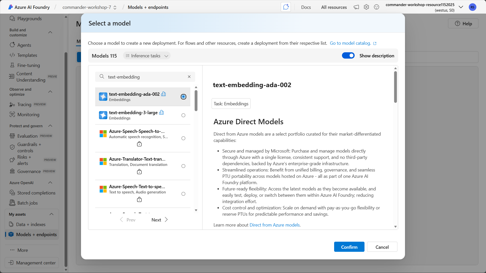
- Select Deploy

7.1.3 Set up Azure Blob Storage¶
- Navigate to the Azure portal
- Search for Storage accounts and select it in the search results
- Select Create
-
Configure the Storage Account resource:
- Subscription: Choose the Azure subscription you want to use
- Resource group: Select
rg-commander-workshop - Storage account name: Enter a unique name for the storage account resource
- Region: Choose the region you selected for your AI Foundry resource
- Preferred storage type: Choose
Azure Blob Storage or Azure Data Lake Storage Gen 2 - Primary workload: Choose
Backup and archive - Performance: Choose
Standard
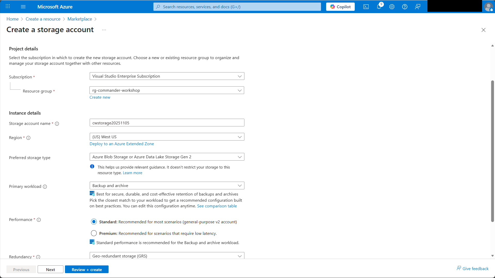
-
Select Review + create, then Create.
- When Azure finishes deploying the storage account, select Go to resource
- In the left navigation, expand Containers and select Add container
-
Enter
policiesin the Name field and select Create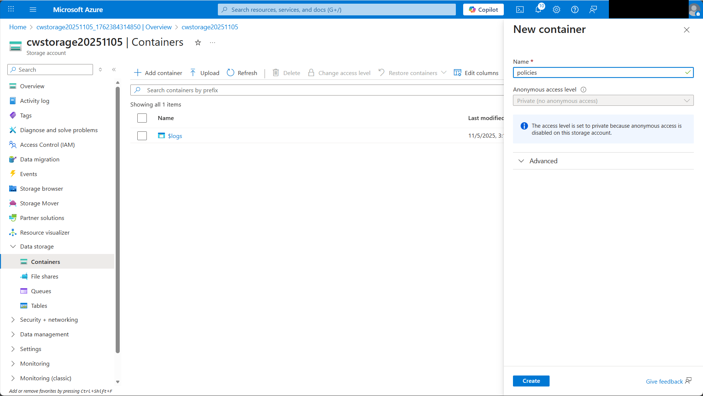
-
In the new
policiescontainer, on the toolbar, select Upload - Select the IT policy documents you downloaded from GitHub
- Select Upload
-
The policy documents will appear in the container
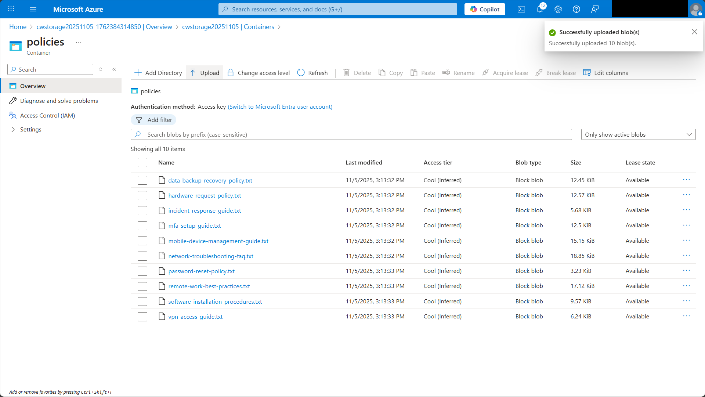
7.1.4 Create an AI Search service¶
-
On the Azure portal home page, select
AI Searchunder Azure services or search for it -
Select Create
-
Configure the AI Search service:
- Subscription: Choose the Azure subscription you want to use
- Resource group: Select
rg-commander-workshop - Service name: Enter a unique name for the service
- Region: Choose the region you selected for your AI Foundry resource
- Pricing tier: Select
Basic
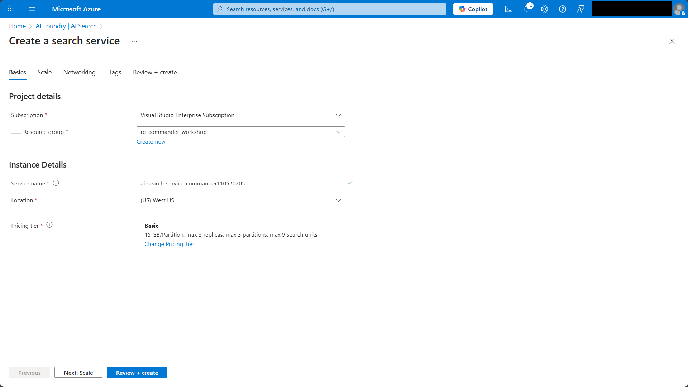
-
Select Review + create, then Create
- When Azure finishes creating the service, select Go to resource
7.1.5 Import data into AI Search¶
-
In your AI Search service, select Import data (new) on the tool bar

-
Select Azure Blob Storage 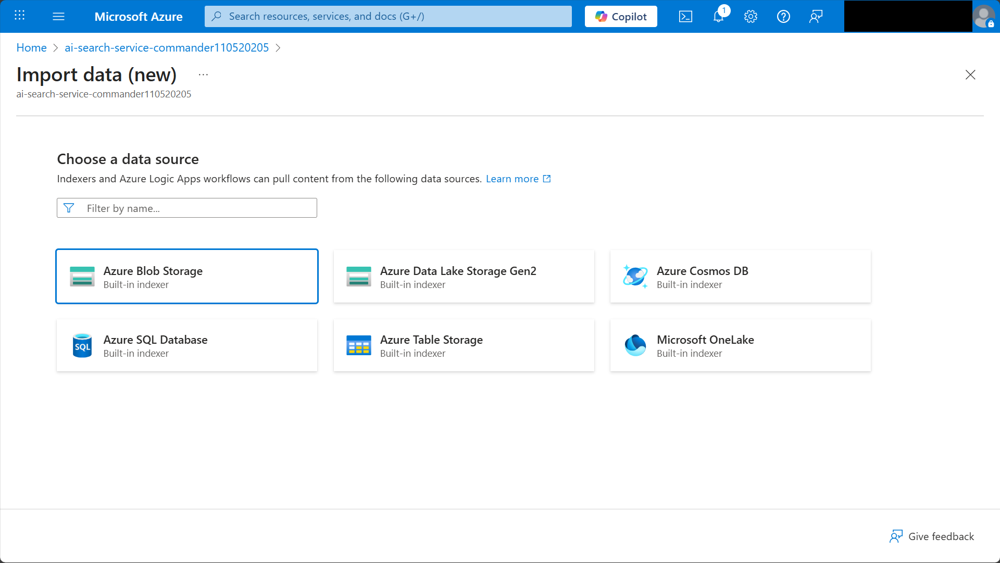
- Select RAG

-
Configure the connection to Azure Blob Storage:
- Subscription: The Azure subscription you want to use
- Storage account: Select the storage account you created in Lab 7.1
- Blob container: Select
policies - Parsing mode: Select
Text

-
Select Next
-
Configure the text vectorization:
- Kind: Select
Azure AI Foundry - Subscription: Select the Azure subscription you want to use
- Azure AI Foundry/Hub project: Select
commander-workshop-7 - Model deployment: Select
text-embedding-ada-002
- Kind: Select
-
Tick the box to acknowledge that connecting to an AI Foundry project will incur additional costs to your account.
- Select Next
- Ensure Enable semantic ranker is ticked
- Select Next
-
Select Create
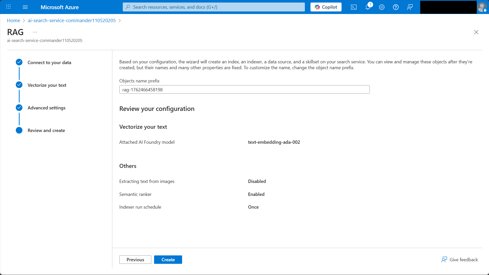
7.1.6 Add Azure AI Search as knowledge source¶
Now you'll connect your AI Search index as a knowledge source for your agent.
- Navigate to Copilot Studio
- Open the
Policy Advisoragent - Select the Knowledge tab in the navigation bar
- Select + Add knowledge
- Select Azure AI Search
-
Select the dropdown under Your connections and select Create new connection
-
Configure the connection:
- Authentication type: Access key
- Azure AI Search Endpoint URL: Select the AI Search service endpoint URL from Azure portal
- Azure AI Search Admin Key: Select the AI Search service admin key from Azure portal

-
Select Create. You'll see the index you create in AI Foundry automatically selected.
Select Add to agent
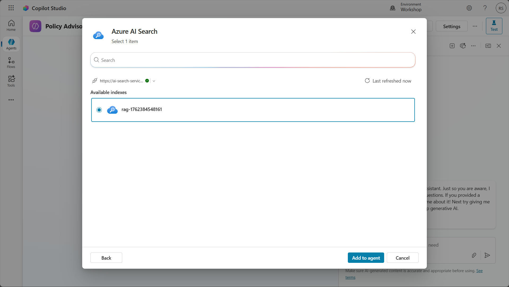
-
Verify the AI Search knowledge source appears in the list of knowledge sources 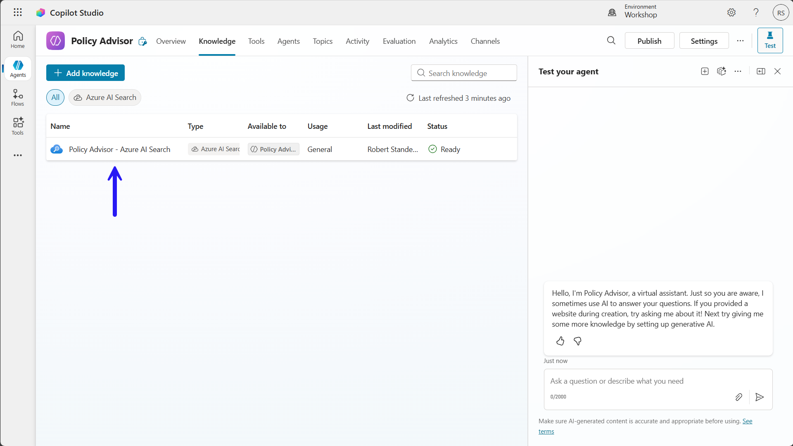
7.1.7 Test the BYOD scenario¶
-
Test the agent with these queries:
The agent will call the AI Search knowledge source, which will use semantic search to answer your questions.

🧪 Lab 7.2: BYOM from Azure AI Foundry to your agent¶
In this lab, you'll put BYOM into practice by deploying a model from AI Foundry and using it in your agent to summarize information from documents.
7.2.1 Deploy a summarization model¶
- Navigate to Azure AI Foundry
- Under My assets in the left-hand navigation, select Models + endpoints
- Select Deploy model, then select Deploy base model
- Enter
Llama-3.3in the Search box - Select
Llama-3.3-70B-Instruct - Select Confirm 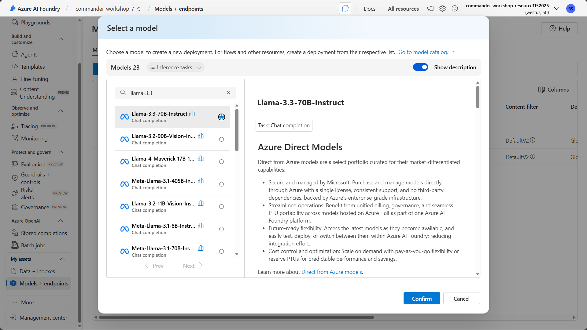
- Select Deploy

7.2.2 Use the model in a prompt¶
- In the navigation bar, select Tools.
- Select + Add a tool
-
Select + New tool
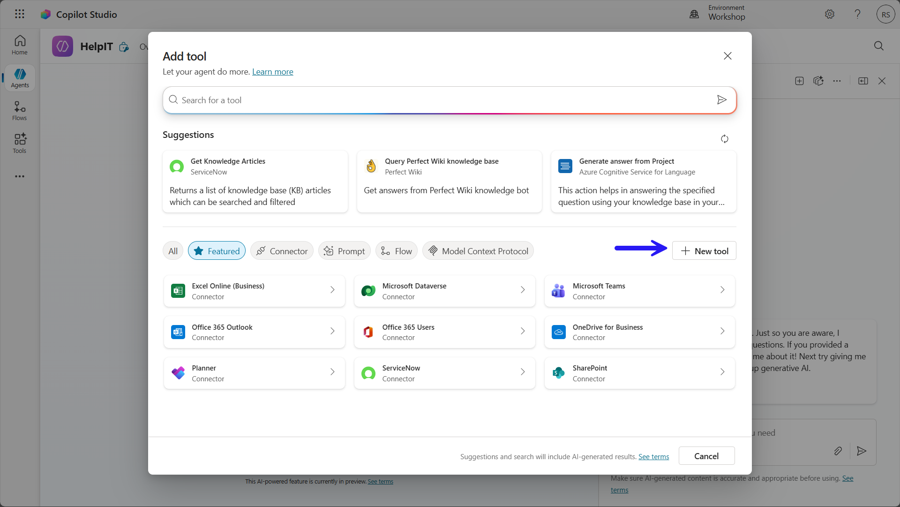
-
Select Prompt
-
Enter
IT policy promptfor the name -
In the Model dropdown, select + next to Azure AI Foundry Models

-
Select Connect a new model and enter the details:
- Model deployment name: Enter
Llama-3.3-70B-Instruct - Base model name: Enter
Llama-3.3-70B-Instruct - Azure model endpoint URL: Enter the value of
Target URIfrom your model details in Azure AI Foundry - API Key: Enter the value of
Keyfrom your model details in AI Foundry - Model description: Enter
Summarization model
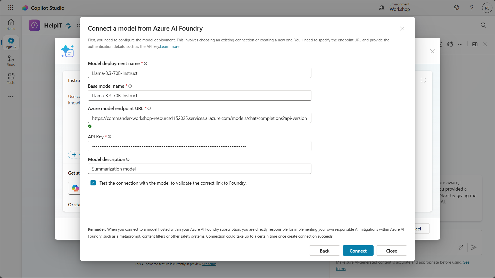
- Model deployment name: Enter
-
Select Connect
-
In the Instructions for the prompt, enter this prompt:
-
Highlight the text
Search Results - Select + Add content
- Select Text
- Enter
SearchResults - Select Close
- Select Save
- Select Add and configure
- In the Inputs section, change the Fill using dropdown to Custom value
- Enter
SearchResultsin Value -
Select Save
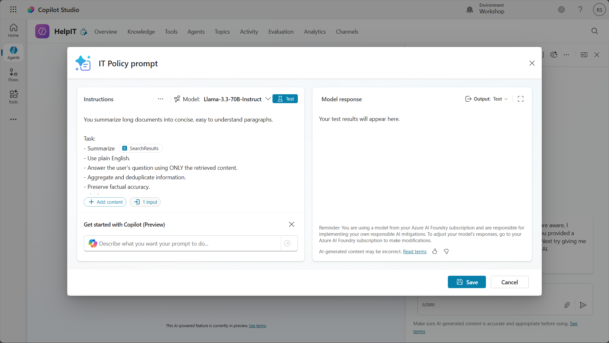
7.2.3 Create the summarization topic¶
- In the navigation bar, select Topics
- Select + Add a topic and choose From blank
- Name the topic
Summarization - In the Trigger node, enter this value for Describe what the topic does:
This topic provides summaries of IT policies and guides. It responds to requests like "Summarize the WFH policy" and "Explain the password policy"
7.2.4 Use generative answers to get the knowledge¶
- Select + to add a node
- Select Advanced, then Generative answers
- Select ... next to the Enter or select a value box
- Select
Activity.Textunder System - Under Data sources, select Edit
- In the properties box, select Search only selected sources
-
Select the Azure AI Search knowledge source you added in Lab 7.1

-
Scroll down and expand Advanced
- Select Select a variable
- Select Create new
-
Select the variable and name it
KnowledgeResults
7.2.5 Pass the knowledge to the custom prompt¶
- Select + to add a node
- Select Add a tool
- Select IT Policy prompt
- In the Inputs section, set the value of
SearchResultstoKnowledgeResults -
In the Outputs section, create a new variable named
Summaryand set it to the value ofpredictionOutput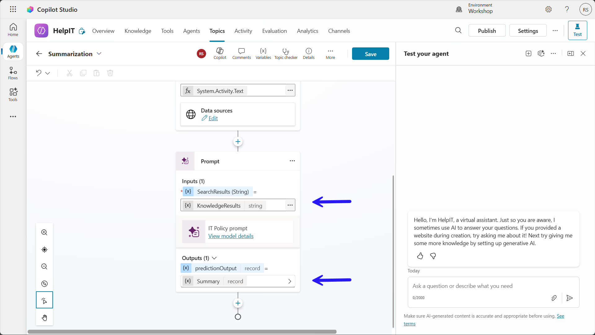
7.2.6 Output the summary¶
- Select + to add a node
- Select Send a message
- Select {x}
-
Select
Summary.text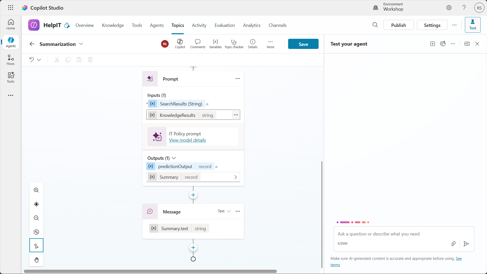
-
Select Save
7.2.7 Test the BYOM scenario¶
-
Test the agent with these prompts to see how the summarization works:
The agent will output the results from the document knowledge source first, then output a summary of the document. 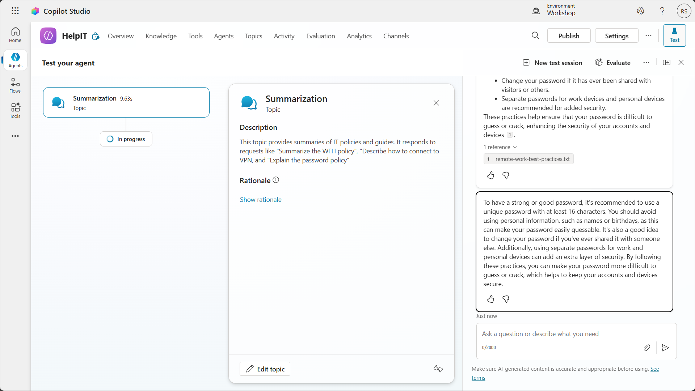
✅ Mission Complete¶
Congratulations! 👏🏻 You've successfully extended your Copilot Studio agent with Azure AI capabilities using both BYOM and BYOD approaches.
You've learned how to:
- Deploy custom AI models in Azure AI Foundry
- Create custom prompt actions that leverage your deployed models
- Build searchable knowledge bases with Azure AI Search
- Connect enterprise data sources to your agent for grounded responses
These capabilities unlock powerful enterprise scenarios and allow you to create truly intelligent, context-aware agents that leverage your organization's data and specialized AI models.
📚 Tactical Resources¶
🔗 Azure AI Foundry documentation
🔗 Custom prompt actions in Copilot Studio
🔗 Azure AI Search documentation
🔗 Knowledge sources in Copilot Studio
🔗 Best practices for prompt engineering